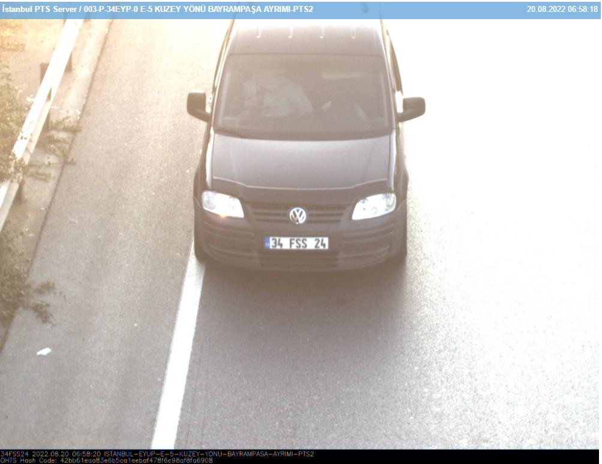
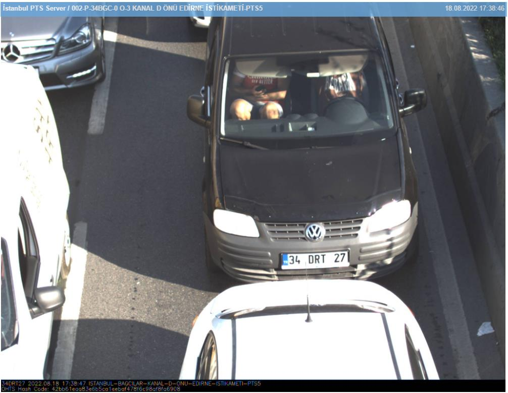
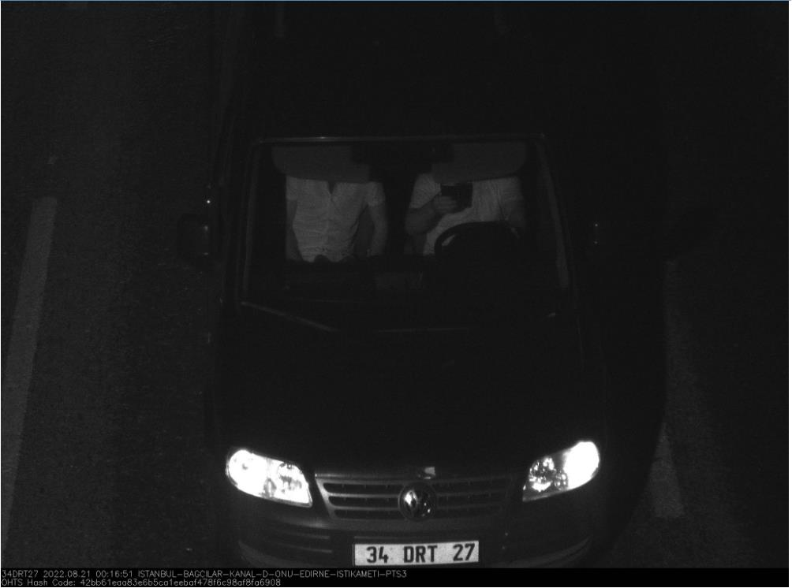

TESPİT TUTANAĞI
Kuştepe Polis Merkezi Amirliğinin 2022/2066 suç numaralı İŞYERİNDEN VE KURUMDAN
HIRSIZLIK konusuna şüpheli şahısların hırsızlık konusunu gerçekleştirmeye siyah renkli caddy marka bir araç ile geldikleri araç üzerinde 34 FSS 24 sayılı plaka takılı olduğu olduğu görülmüş plaka sorgulatıldığında aynı renk aynı model siyah renkli caddy marka araca çıktığı sahibi ile 0533 033 04 45
numaralı hat aranarak görüşüldüğünde aracının Tekirdağ da olduğunu aracının SAHİBİNDEN isimli sitede satış ilanında olduğunu beyan etmesi üzerine yapılan çalışmalarda şüpheli şahısları kullandıkları plakanın ikiz plaka olduğu anlaşılması üzerine Şişli Asayiş Büro Amirliğine bağlı ekipler olarak PTS üzerinde çalışmalar yapıldığında güzergah belirlenmiş; Çevre ilçelerden elde edilen bilgilere göre aynı araç aynı plaka ile Pendik bölgesinde de konuya karıştığı akabinde idaremize gelerek hırsızlık konusunu gerçekleştirdiklerine istinaden; Pendik bölgesinden çıkış yaptıktan sonra edirne istikameti yönü pts geçişi 20/08/2022 günü Saat:05:05

İdaremize giriş yaptıkları Muradiye cami önü pts geçişi 20/08/2022 günü Saat:05:42
İdaremizde hırsızlık konusu sonrası Bayrampaşa yönü pts geçişi 20/08/2022 günü Saat:06:58

Devam eden istihbari ve kapalı kaynak çalışmalarımızda Plaka Tanıma Sisteminde ilimiz genelinde bahse konu şüpheli 34 FSS 24 plaka sayılı aracın renk, marka, model, tavan çıtası ve nikelaj kaplamalı kapı kolları bulunan belirgin özellik veya iz emarelere uygun araçların yapılan kontrollerinde farklı gün ve benzer istikametlerde 34 DRT 27 plaka sayılı siyah renk Volkswagen Caddy marka aracın şüpheli 34 FSS 24 plaka sayılı araçla renk marka model ve görünüm olarak çok fazla benzerlik gösterdiği görülmüş,
Şüpheli ikiz plakalı 34
Nikelaj kaplamalı kapı
FSS 24 plakalı araç
kulpları
Tampon altı ızgaranın
griy renkli olması
aracın kaput ön
kısmında bulunan
rüzgarlıkla benzerlik
gösteren rüzgarlık
Şüpheli araç orijinal
34 DRT 27 plakalı araç

Şüpheli şahısların orijinal 34 DRT 27 plakalı siyah renkli wosvogen caddy marka araç ile başka gün ve saatlerde günün farklı saatlerinde gece vakti bile güneşlikleri inik vaziyette seyir halinde oldukları PTS geçişleri görülmüş aşağıda fotoğraflandırılmıştır.
Plaka Tanıma Sistemi bilgileri ışığında bahse konu aracın kontrolleri yapıldığında olay günü olan 20.08.2022 tarihinde bahse konu 34 DRT 27 plaka sayılı aracın Zerda FİDAN (T.C
60979516070) isimli şahıs adına kayıtlı olduğu, ancak 31.08.2022 tarihi itibariyle bahse konu 34 DRT
27 sayılı plakanın İbrahimoğlu Otomotiv Sanayi ve Ticaret Limited Şirketi (Vergi No: 4691233332
Gaziosmanpaşa) adına kayıtlı olduğu anlaşılmış,
Şahsın yapılan kapalı kaynak kontrollerinde herhangi bir suç kaydının olmadığı, devam eden araştırmalarda Zerda FİDAN isimli şahsın erkek kardeşi olan Yılmaz FİDAN (T.C 60973516298) isimli şahsın benzer suçlardan 29 adet suç kaydının bulunduğu (İşyerinden, otodan, evden, açıktan hırsızlık, mala zarar verme vb.) görülmüş,
Şahısların yakalanmasına yönelik yapılan çalışmalarda her iki şahsında Mernis adresinin Yeşilkent Mahallesi G-562 Sokak 0 Blok No:13 İç Kapı No:1 Avcılar/İstanbul sayılı adres olduğu görülmüş, çalıştığımız farklı gün ve saatlerde bahse konu şahısların adresleri kontrol edilmişse de yakalanmaları mümkün olamamış, şahısların yakalanmasına yönelik çalışmalarımız devam etmekte olup;
Not: Beyoğlu İlçe Emniyer Müdürlüğü Asayiş Büro Amirliği ekipleri Karaköy Polis Merkezi Amirliğinin 2022/894 suç numaralı İşyerinden ve Kurumdan hırsızlık konusunda da 34 DRT 27
plakalı aracı şüpheli olarak 08/09/2022 günü tespitini yaptığı anlaşılmıştır.
İş Bu Görüntü izleme ve tespit tutanağı tarafımızca tanzimle altı birlikte imza altına alınmıştır.12/09/2022 günü Saat:17:30
355294
401082
479736
P.M.
P.M.
P.M.